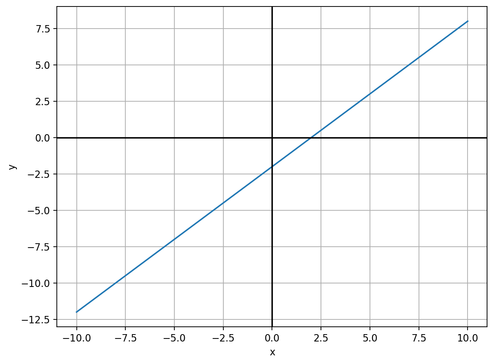
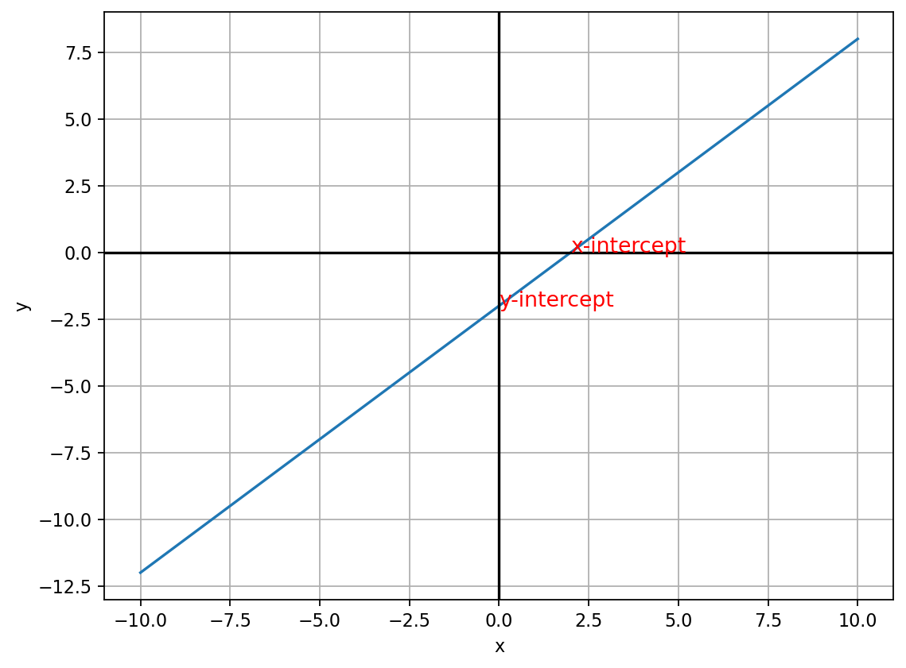
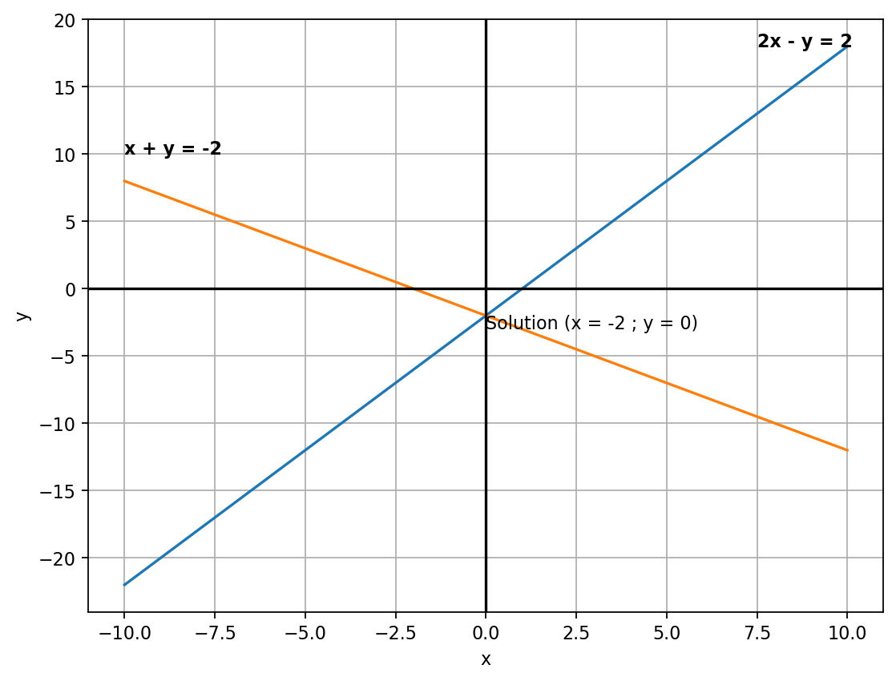
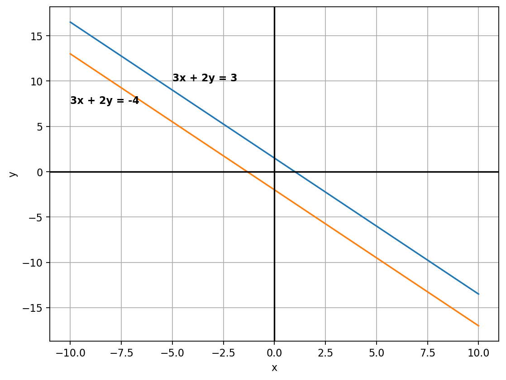
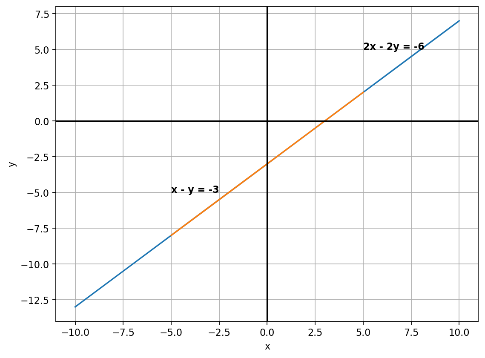
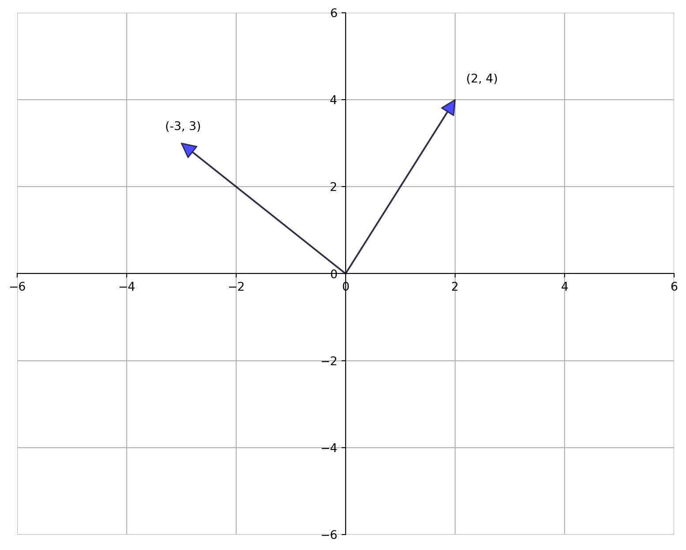

x = 5
2 * x + 5 == 15TrueNodar Okroshiashvili
March 1, 2021
This is the second post in the blog series about linear algebra, covering the basics.
In this post I will introduce you to the basics of linear algebra, starting from introduciong one and two variable equations, then moving on to vectors and operations on vectors. After that, I will move on to matrices and operations defined on matrices. I will also show you how to use Python to solve linear algebra problems.
Generally, equations state that two things are equal. They contain one or more variables and solving them means to find the value of those variable to make equality true. This value is known as a solution. Consider the following equation:
\[ 2x + 5 = 15 \]
In this case, our variable is \(x\) and the solution is \(10\).
Equations with two variables are known as linear equations. Consider the following equation:
\[ 2y + 3 = 2x - 1 \]
This equation includes two different variables, \(x\), and \(y\). These variables depend on one another. The value of \(x\) is determined in part by the value of \(y\) and vice-versa. So we can”t solve this equation as in the case of one variable equation. However, we can express \(y\) in terms of \(x\) and obtain a result that describes a relative relationship between the variables.
For example, let’s solve this equation for \(y\). First, rearrage equation in a way to have following:
\[ 2y = 2x - 4 \Rightarrow y = x - 2 \]
Note that this is not linear function, this is an affine function
Below we will see the solution of the above equation for various values of \(y\). It’s also good practice to plot the solutions.
# Create a dataframe with a column x, containing values from -10 to 10
df = pd.DataFrame({"x": range(-10, 11)})
# Add column y, by applying the solved equation to x
df["y"] = df["x"] - 2
# Display the dataframe
df.head()| x | y | |
|---|---|---|
| 0 | -10 | -12 |
| 1 | -9 | -11 |
| 2 | -8 | -10 |
| 3 | -7 | -9 |
| 4 | -6 | -8 |
Above table shows valid solutions for values of \(x\) in range \((-10, 10)\). Besides numerical solution, let see the graphical solution.
plt.figure(num=None, figsize=(8, 6), dpi=80, facecolor="w", edgecolor="k")
plt.plot(df["x"], df["y"])
plt.xlabel("x")
plt.ylabel("y")
plt.grid()
plt.axhline(color="black")
plt.axvline(color="black")
plt.show()
The solution of the above equation lies on the blue line, for any value pairs \((x,y)~\in~\mathbb{R}\)
When we use a linear equation to plot a line, we can easily see where the line intersects the X and Y axes of the plot. These points are known as intercepts. The x-intercept is where the line intersects the X (horizontal) axis, and the y-intercept is where the line intersects the Y (horizontal) axis.
The x-intercept is the point where the line crosses the \(X\) axis, and at this point, the value for \(y\) is always 0. Similarly, the y-intercept is where the line crosses the \(Y\) axis, at which \(x\) value is 0. So to find the intercepts, we need to solve the equation for \(x\) when \(y\) is 0 and for \(y\) when \(x\) is 0.
For the x-intercept, we have:
\[ y = x - 2 = 0 \Rightarrow x = 2 \]
For y-intercept, we have:
\[ y = x - 2 \Rightarrow y = 0 - 2 \Rightarrow y = -2 \]
plt.figure(num=None, figsize=(8, 6), dpi=80, facecolor="w", edgecolor="k")
plt.plot(df["x"], df["y"])
plt.xlabel("x")
plt.ylabel("y")
plt.grid()
plt.axhline(color="black")
plt.axvline(color="black")
plt.annotate("x-intercept", (2, 0), color="red", fontsize=12)
plt.annotate("y-intercept", (0, -2), color="red", fontsize=12)
plt.show()
It is natural to ask, what if we move one unit along the \(x\) axis, how the value for the \(y\) change? The answer to this question is the notion of slope. Slope is defined as
\[ m = \frac{y_{2} - y_{1}}{x_{2} - x_{1}} \]
This means that for any given two ordered pairs of \(x\) and \(y\), how a change in \(x\) affect \(y\). For example:
So, according to our formula, slope equal to:
\[ m = \frac{4 - 3}{6 - 5} = 1 \]
So what does that actually mean? Well, if we start from any point on the blue line and move one unit to the right (along with the \(X\) axis), we’ll need to move 1 unit up (along with the \(Y\) axis) to get back to the blue line.
To have the system of equations means that we have two or more linear equations together and we have to solve them simultaneously to make the equality true. There are three possible solutions of the linear system. One solution, No solution or system is inconsistent and infinitely many solutions. Generally, the linear system can have two or more variables and two or more equations. There, I will consider two variable and two-equation system with three solutions, in order to depict the intuition. It’s up to you to delve deeper.
\[ \begin{cases} 2x-y = 2 \\ x+y = -2 \end{cases} \]
If we divide these equations we’ll get \(x=-2\) and \(y=0\). This is the solution. Now let see it graphically.
df_1 = pd.DataFrame({"x": range(-10, 11)})
df_1["y"] = 2 * df_1["x"] - 2
df_2 = pd.DataFrame({"x": range(-10, 11)})
df_2["y"] = -1 * df_2["x"] - 2
plt.figure(num=None, figsize=(8, 6), dpi=80, facecolor="w", edgecolor="k")
plt.plot(df_1["x"], df_1["y"])
plt.plot(df_2["x"], df_2["y"])
plt.xlabel("x")
plt.ylabel("y")
plt.grid()
plt.axhline(color="black")
plt.axvline(color="black")
plt.annotate("2x - y = 2", (7.5, 18), weight="bold")
plt.annotate("x + y = -2", (-10, 10), weight="bold")
# I put coordinates(0,-3) intentionally to make annotation look clear
plt.annotate("Solution (x = -2 ; y = 0)", (0, -3))
plt.show()
\[ \begin{cases} 3x+2y = 3 \\ 3x+2y = -4 \end{cases} \]
The system is inconsistent. There is no solution.
df_1 = pd.DataFrame({"x": range(-10, 11)})
df_1["y"] = (-3 / 2) * df_1["x"] + 3 / 2
df_2 = pd.DataFrame({"x": range(-10, 11)})
df_2["y"] = (-3 / 2) * df_2["x"] - 2
plt.figure(num=None, figsize=(8, 6), dpi=80, facecolor="w", edgecolor="k")
plt.plot(df_1["x"], df_1["y"])
plt.plot(df_2["x"], df_2["y"])
plt.xlabel("x")
plt.ylabel("y")
plt.grid()
plt.axhline(color="black")
plt.axvline(color="black")
plt.annotate("3x + 2y = 3", (-5, 10), weight="bold")
plt.annotate("3x + 2y = -4", (-10, 7.5), weight="bold")
plt.show()
\[ \begin{cases} x-y = -3 \\ 2x-2y = -6 \end{cases} \]
The system has infinitely many solutions, as one of them is a linear combination of another. In this case, the second equation is scaled by 2 version of the first equation.
df_1 = pd.DataFrame({"x": range(-10, 11)})
df_1["y"] = df_1["x"] - 3
df_2 = pd.DataFrame({"x": range(-5, 6)})
df_2["y"] = df_2["x"] - 3
plt.figure(num=None, figsize=(8, 6), dpi=80, facecolor="w", edgecolor="k")
plt.plot(df_1["x"], df_1["y"])
plt.plot(df_2["x"], df_2["y"])
plt.xlabel("x")
plt.ylabel("y")
plt.grid()
plt.axhline(color="black")
plt.axvline(color="black")
plt.annotate("2x - 2y = -6", (5, 5), weight="bold")
plt.annotate("x - y = -3", (-5, -5), weight="bold")
plt.show()
In plain English, the vector is a directed arrow. Mathematically, the vector is an object that has magnitude and direction. Magnitude is the length of the vector and direction is from its tail to its end. In other words, imagine vector as the line which connects two points in the Cartesian Coordinate System. A vector of length \(n\) is a sequence or array of \(n\) numbers, which we can write as:
\[ \vec{X} = (x_1, x_2, x_3...x_n) \]
or
\[ \vec{X} = [x_1, x_2, x_3, ... x_n] \]
Horizontally represented vector is a row vector, while vertically represented vector is a column vector. Let see how they look graphically.
fig, ax = plt.subplots(figsize=(10, 8))
# Set the axes through the origin
for spine in ["left", "bottom"]:
ax.spines[spine].set_position("zero")
for spine in ["right", "top"]:
ax.spines[spine].set_color("none")
ax.set(xlim=(-6, 6), ylim=(-6, 6))
ax.grid()
vecs = ((2, 4), (-3, 3)) # These are vectors
for v in vecs:
ax.annotate("", xy=v, xytext=(0, 0), arrowprops=dict(facecolor="blue", shrink=0, alpha=0.7, width=0.5))
ax.text(1.1 * v[0], 1.1 * v[1], str(v))
plt.show()
The dimension of vector is the number of elements in it. For example, the above vector is a row vector with dimension \(1\times n\), but if we take it as a column vector its dimension will be \(n\times 1\).
\[ \vec{X} = [x_1,x_2,...x_n]_{1\times~n} \]
and
\[ \vec{X} = \begin{bmatrix} x_1 \\ x_2 \\ \vdots \\ x_n \end{bmatrix}_{n\times1} \]
The most common operations on vectors are vector addition/subtraction and scalar multiplication.
If we have two vectors, \(\vec{X}\) and \(\vec{Y}\), we can add them up in the following way:
\[ \vec{X} + \vec{Y} = \begin{bmatrix} x_1 \\ x_2 \\ \vdots \\ x_n \end{bmatrix}_{n\times1} + \begin{bmatrix} y_1 \\ y_2 \\ \vdots \\ y_n \end{bmatrix}_{n\times1} = \begin{bmatrix} x_1 + y_1 \\ x_2 + y_2 \\ \vdots \\ x_n + y_n \end{bmatrix}_{n\times1} \]
X + Y =
[[4]
[6]
[8]]Multiplying vector by a scalar \(\alpha\), gives
\[ \alpha \vec{X} = \begin{bmatrix} \alpha x_1 \\ \alpha x_2 \\ \vdots \\ \alpha x_n \end{bmatrix}_{n\times1} \]
For scalar multiplication, if we have vector \(X\) and scalar \(\alpha = 5\) then alpha times \(X\) is:
The vector length or the magnitude is calculated by the following formula:
\[ \|\vec{X}\| = \sqrt{x_1^2 + x_2^2 + x_3^2 + ... + x_n^2} = \sqrt{\sum_{i=1}^n x_i^2} \]
We can link notion of vector length to the Euclidean distance. If our vector \(\vec{X}\) has tail at origin, \(\vec{0} = [0_1, 0_2, 0_3, ... , 0_n]\) and point at \(\vec{X} = [x_1,x_2,...x_n]\), then Euclidean distance between tail and point is the length of \(\vec{X}\) by the formula:
\[ d(\vec{0},\vec{X}) = \sqrt{(0_1 - x_1)^2 + (0_2 - x_2)^2 + ... + (0_n - x_n)^2} = \sqrt{\sum_{i=1}^n (0_i - x_i)^2} \]
For example, we have vector \(X\)
\[ \vec{X} = \begin{bmatrix} 1 \\ 2 \\ 3 \end{bmatrix} \]
then its length is
\[ \|\vec{X}\| = \sqrt{1^2 + 2^2 + 3^2} = \sqrt{14} \]
What if the length of a vector equal to 1? This kind of vector is known as the unit vector and it plays a very important role in different calculations and formulae. We’ll see it in later posts, but here unit vector is defined as
\[ \hat{X} = \frac{X}{\|X\|} \]
where \(\hat{X}\) is a unit vector, the numerator is vector \(\vec{X}\) and denominator is the norm of vector \(\vec{X}\).
We can use vector \(X\) from above example. We already calculated it length which is \(\|\vec{X}\| = \sqrt{14}\). So, we can construct unit vector \(\hat{X}\) in the following way:
\[ \hat{X} = \frac{X}{\|X\|} = \frac{1}{\sqrt{14}}; \frac{2}{\sqrt{14}}; \frac{3}{\sqrt{14}} \Rightarrow [0.26726124; \ 0.53452248; \ 0.80178373] \]
Vector n = [0.26726124 0.53452248 0.80178373]Multiplication of two vectors is known as dot product, scalar product, or inner product and is defined by:
\[ \langle\, \vec{X},\vec{Y}\rangle~=~\vec{X}\cdot\vec{Y}~=~x_1\times y_1 + x_2\times y_2 + ... + x_n\times y_n~=~\sum_{i=1}^n x_i\cdot y_i \]
The inner product is defined only when the dimensions of two vectors coincide.
Another formula of inner product is:
\[ \vec{X}\cdot\vec{Y}~=~\|\vec{X}\|\cdot\|\vec{Y}\|\cdot\cos{\theta} \]
where \(\cos{\theta}\) is an angle between the vectors \(\vec{X}\) and \(\vec{Y}\).
# It's more convenient to represent the vector as a Numpy ndarray, rather than Python tuple.
X = np.array([1, 2, 3])
Y = np.array((2, 4, 6))
# Numpy have two possible ways to compute vector inner product
scalar_prod = np.sum(X * Y)
dot_prod = np.dot(X, Y)
print("Scalar Product is:", scalar_prod)
print("Dot Product is:", dot_prod)Scalar Product is: 28
Dot Product is: 28Matrix is a rectangular array of numbers and/or expressions that are arranged into rows and columns. These rows and columns can be considered as row and column vectors. So, the matrix is the rectangular array which contains either row or column vectors. Generally, capital letters are used to denote matrix and lower case letters to denote each element of that matrix and I will follow this convention. A matrix arranges numbers into rows and columns, like this:
\[ A = \begin{bmatrix} a_{1,1} & a_{1,2}\\ a_{2,1} & a_{2,2} \end{bmatrix} \]
Here, matrix \(A\) has four elements, denoted by lower letter \(a\), where subscripts denote row and column number. For example, \(a_{2,1}\) denotes element at the cross of the second row and first column.
If a matrix \(A\) has \(n\) rows and \(m\) columns, we call \(A\) \(n\times m\) matrix and it is read as “n by m matrix”. A typical \(n\times m\) matrix \(A\) can be written as:
\[ A = \begin{bmatrix} a_{11} & a_{12} & \cdots & a_{1m} \\ a_{21} & a_{22} & \cdots & a_{2m} \\ \vdots & \vdots & & \vdots \\ a_{n1} & a_{n2} & \cdots & a_{nm} \end{bmatrix}_{n \times m} \]
When \(n=m\) we have square matrix. To link this matrix to the vector we can rewrite it by the following way:
\[ A = \begin{bmatrix} [a_{11} & a_{12} & \cdots & a_{1m}] \\ [a_{21} & a_{22} & \cdots & a_{2m}] \\ [\vdots & \vdots & & \vdots] \\ [a_{n1} & a_{n2} & \cdots & a_{nm}] \end{bmatrix}_{n \times m} \]
We add two matrices element-wise. In order this addition to exist, we require that the dimensions of the two matrices coincide. If we have two matrices, \(A\) and \(B\), addition is defined by:
\[ A + B = \begin{bmatrix} a_{11} & \cdots & a_{1m} \\ \vdots & \vdots & \vdots \\ a_{n1} & \cdots & a_{nm} \\ \end{bmatrix} + \begin{bmatrix} b_{11} & \cdots & b_{1m} \\ \vdots & \vdots & \vdots \\ b_{n1} & \cdots & b_{nm} \\ \end{bmatrix} = \begin{bmatrix} a_{11} + b_{11} & \cdots & a_{1m} + b_{1m} \\ \vdots & \vdots & \vdots \\ a_{n1} + b_{n1} & \cdots & a_{nm} + b_{nm} \\ \end{bmatrix} \]
Matrix subtraction is defined in the same fashion as the addition.
A = np.array([[1, 5, 3], [4, 2, 8], [3, 6, 9]])
B = np.array([[1, 1, 3], [1, 2, 8], [0, 5, 3]])
print("Matrix A is:", A, sep="\n")
print("Matrix B is:", B, sep="\n")
print("The sum of them is:", A + B, sep="\n")
print("The difference of them is:", A - B, sep="\n")Matrix A is:
[[1 5 3]
[4 2 8]
[3 6 9]]
Matrix B is:
[[1 1 3]
[1 2 8]
[0 5 3]]
The sum of them is:
[[ 2 6 6]
[ 5 4 16]
[ 3 11 12]]
The difference of them is:
[[0 4 0]
[3 0 0]
[3 1 6]]The negative of a matrix, is just a matrix with the sign of each element reversed:
\[ A = \begin{bmatrix} a_{11} & a_{12} & \cdots & a_{1m} \\ a_{21} & a_{22} & \cdots & a_{2m} \\ \vdots & \vdots & & \vdots \\ a_{n1} & a_{n2} & \cdots & a_{nm} \end{bmatrix} \]
\[ -A = \begin{bmatrix} -a_{11} & -a_{12} & \cdots & -a_{1m} \\ -a_{21} & -a_{22} & \cdots & -a_{2m} \\ \vdots & \vdots & & \vdots \\ -a_{n1} & -a_{n2} & \cdots & -a_{nm} \end{bmatrix} \]
C = np.array([[-5, -3, -1], [1, 3, 5]])
print("Matrix C is:", C, sep="\n")
print("The negative of C is:", -C, sep="\n")Matrix C is:
[[-5 -3 -1]
[ 1 3 5]]
The negative of C is:
[[ 5 3 1]
[-1 -3 -5]]Multiplying matrices is a little more complex than the operations we’ve seen so far. There are two cases to consider. One is scalar multiplication (multiplying a matrix by a single number), and second is matrix multiplication (multiplying a matrix by another matrix).
If we have some scalar or number \(\gamma\) and matrix \(A\), scalar multiplication is:
\[ \gamma A = \gamma \begin{bmatrix} a_{11} & \cdots & a_{1m} \\ \vdots & \vdots & \vdots \\ a_{n1} & \cdots & a_{nm} \\ \end{bmatrix} = \begin{bmatrix} \gamma a_{11} & \cdots & \gamma a_{1m} \\ \vdots & \vdots & \vdots \\ \gamma a_{n1} & \cdots & \gamma a_{nm} \\ \end{bmatrix} \]
scalar = 2
A = np.array([[1, 2, 3], [4, 5, 6], [7, 8, 9]])
print("Scalar is:", scalar)
print("Matrix A is:", A, sep="\n")
print("Matrix multiplied by the scalar is:", scalar * A, sep="\n")Scalar is: 2
Matrix A is:
[[1 2 3]
[4 5 6]
[7 8 9]]
Matrix multiplied by the scalar is:
[[ 2 4 6]
[ 8 10 12]
[14 16 18]]To multiply two matrices, we take inner product of \(i\)-th row of the matrix \(A\) and \(j\)-th columns of matrix \(B\). If we have two matrices \(A\) is \(n \times k\) and \(B\) is \(j \times m\), then to multiply \(A\) and \(B\), we require \(k=j\), and resulting matrix \(AB\) is \(n \times m\).
\[ A \cdot B = \begin{bmatrix} a_{11} & \cdots & a_{1k} \\ \vdots & \vdots & \vdots \\ a_{n1} & \cdots & a_{nk} \\ \end{bmatrix}_{n\times k} \cdot \begin{bmatrix} b_{11} & \cdots & b_{1m} \\ \vdots & \vdots & \vdots \\ b_{j1} & \cdots & b_{jm} \\ \end{bmatrix}_{j \times m} = \quad \]
\[ \begin{bmatrix} (a_{11} \times b_{11} & +~\cdots~+ & a_{1k} \times b_{j1}),~\cdots~,(a_{11} \times b_{1m} & +~\cdots~+ & a_{1k} \times b_{jm}) \\ \vdots & \vdots & \vdots \\ (a_{n1} \times b_{11} & +~\cdots~+ & a_{nk} \times b_{j1}),~\cdots~,(a_{n1} \times b_{1m} & +~\cdots~+ & a_{nk} \times b_{jm})\\ \end{bmatrix}_{n \times m} \]
If you did not catch the idea of matrix multiplication don’t worry. It takes time to get used to it. Below, I will provide a numerical example to make it more clear.
Note that, in matrix multiplication, \(A \cdot B\) is not same as \(B \cdot A\).
# In Numpy matrix multiplication can be done with no effort
A = np.array([[1, 2, 3], [4, 5, 6]])
B = np.array([[9, 8], [7, 6], [5, 4]])
print("A * B is:", np.dot(A, B), sep="\n")
print("B * A is:", np.dot(B, A), sep="\n")A * B is:
[[ 38 32]
[101 86]]
B * A is:
[[41 58 75]
[31 44 57]
[21 30 39]]It’s really easy to multiply a matrix by a matrix in Numpy. Let us see how it can be done by hand.
Let’s look at an example:
\[ \begin{bmatrix} 1 & 2 & 3 \\ 4 & 5 & 6 \end{bmatrix} \cdot \begin{bmatrix} 9 & 8 \\ 7 & 6 \\ 5 & 4 \end{bmatrix} \]
Note that the first matrix is \(2\times 3\), and the second matrix is \(3\times 2\). The important thing here is that the first matrix has two rows, and the second matrix has two columns. To perform the multiplication, we first take the dot product of the first row of the first matrix (1,2,3) and the first column of the second matrix (9,7,5):
\[ (1,2,3) \cdot (9,7,5) = (1 \times 9) + (2 \times 7) + (3 \times 5) = 38 \]
In our resulting matrix (which will always have the same number of rows as the first matrix, and the same number of columns as the second matrix), we can enter this into the first row and first column element:
\[ \begin{bmatrix} 38 & ?\\? & ? \end{bmatrix} \]
Now we can take the dot product of the first row of the first matrix and the second column of the second matrix:
\[ (1,2,3) \cdot (8,6,4) = (1 \times 8) + (2 \times 6) + (3 \times 4) = 32 \]
Let’s add that to our resulting matrix in the first row and second column element:
\[ \begin{bmatrix} 38 & 32\\? & ? \end{bmatrix} \]
Now we can repeat this process for the second row of the first matrix and the first column of the second matrix:
\[ (4,5,6) \cdot (9,7,5) = (4 \times 9) + (5 \times 7) + (6 \times 5) = 101 \]
Which fills in the next element in the result:
\[ \begin{bmatrix} 38 & 32\\101 & ? \end{bmatrix} \]
Finally, we get the dot product for the second row of the first matrix and the second column of the second matrix:
\[ (4,5,6) \cdot (8,6,4) = (4 \times 8) + (5 \times 6) + (6 \times 4) = 86 \]
Giving us:
\[ \begin{bmatrix} 38 & 32\\101 & 86 \end{bmatrix} \]
If this is not enough to catch the idea, take a look this explanation
In the above example, we saw that the matrix is the collection of vectors. We also know that vectors can be horizontal as well as vertical, or row and column vectors. Now, what if we change in any matrix row vectors into column vectors? This operation is known as transposition. The idea of this operation is to change matrix rows into matrix columns or vice versa, and is denoted by the superscript \(T\).
\[ A = \begin{bmatrix} a_{11} & a_{12} & \cdots & a_{1m} \\ a_{21} & a_{22} & \cdots & a_{2m} \\ \vdots & \vdots & & \vdots \\ a_{n1} & a_{n2} & \cdots & a_{nm} \end{bmatrix}_{n \times m} \]
then
\[ A^{T} = \begin{bmatrix} a_{11} & a_{21} & \cdots & a_{n1} \\ a_{12} & a_{22} & \cdots & a_{n2} \\ \vdots & \vdots & & \vdots \\ a_{1m} & a_{2m} & \cdots & a_{nm} \end{bmatrix}_{m \times n} \]
There are several different types of matrices. In this post, we will introduce only identity matix. Future post will introduce other types of matrices. An identity matrix (usually indicated by a capital \(I\)) is the equivalent in matrix terms of the number 1. It is always square matrix, and it has the value 1 in the diagonal element positions I1,1, I2,2, etc; and 0 in all other element positions. Here’s an example of a \(3 \times 3\) identity matrix:
\[ I = \begin{bmatrix} 1 & 0 & 0 \\ 0 & 1 & 0 \\ 0 & 0 & 1 \end{bmatrix}_{3 \times 3} \]
Multiplying any matrix by an identity matrix is the same as multiplying a number by 1; the result is the same as the original value.
# We have two ways to define identity matrix in Numpy.
# First is to define by hand, like above examples, and second is to use Numpy's buildin function
I_1 = np.array([[1.0, 0.0, 0.0], [0.0, 1.0, 0.0], [0.0, 0.0, 1.0]])
I_2 = np.identity(3)
print(I_1)
print(I_2)[[1. 0. 0.]
[0. 1. 0.]
[0. 0. 1.]]
[[1. 0. 0.]
[0. 1. 0.]
[0. 0. 1.]]In this post, I tried to cover the basics of linear algebra. I depicted some theory with examples solved by hand as well as with Numpy. I do hope, this blog will help you to grab the necessary knowledge in linear algebra basics and further gives you the direction where to dig deeper. I did not provide here further resources not to confuse the reader and give freedom to look for some other materials.